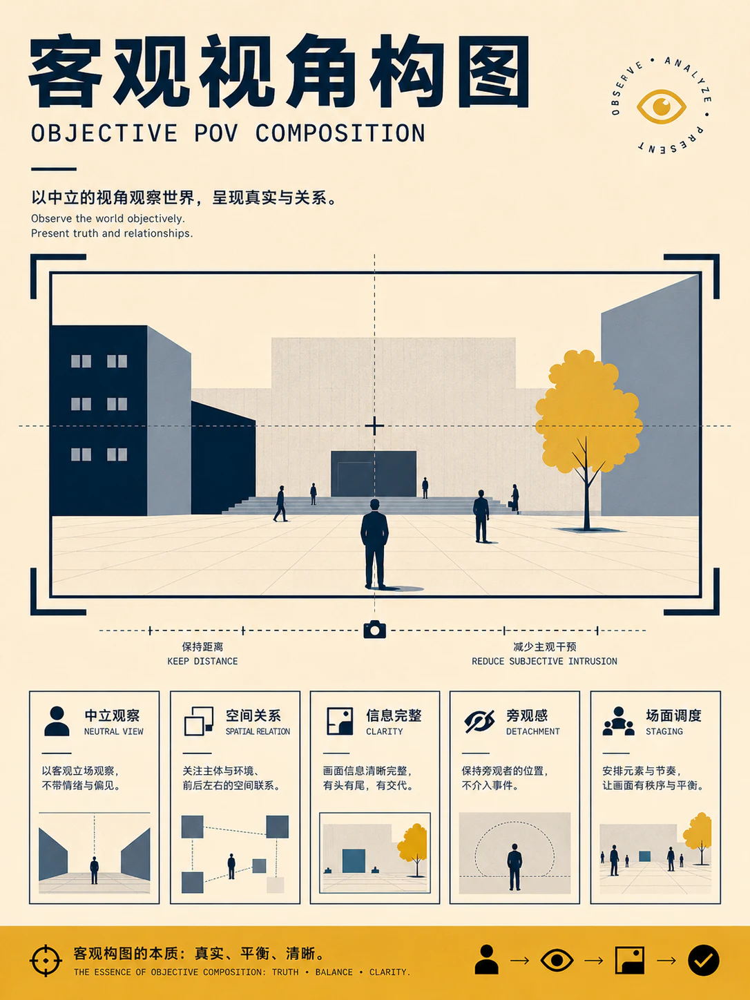

The Five C's of Cinematography (Cine/Grafic Publications, 1965)
01
为什么旁观更有力
WHY DETACHMENT SPEAKS
很多新手拍对话或事件，第一反应是不断往人物脸上推近景。但摄影机一旦退后一步、站到旁观席上，画面就多出了特写永远给不了的东西：人与环境之间的距离、站姿与朝向的默契、以及「谁先迈步、谁留在原地」的完整因果。
本页重点 · 旁观全场
摄影机退到场外 18 m，平视装下两人、台阶与整座广场
02
从电影史走来
CINEMA LINEAGE
电影诞生最初就是一台立在三脚架上的客观镜头。后来剪辑语法兴起，把空间切碎成正反打和特写；但从 1950 年代起，几代导演与学者又重新证明了「不动机位、靠空间调度讲故事」的持久力量。
03
深焦与空间调度
STAGING IN DEPTH
大卫·波德维尔提醒我们区分两件常被混为一谈的事：纵深空间（Deep Space）是把人摆在前景、中景、远景的调度功夫；深焦摄影（Deep Focus）是收小光圈让三层同时清晰的光学功夫。在下面这座排演桌上，机位固定在 17.5 m 客观位，试着直接拖动俯拍图里的三枚人物磁钉和光圈环。
俯拍走位蓝图 · 拖动甲 / 乙 / 丙磁钉
正面客观银幕 · 实时透视与景深成像
04
四种实战场景
WHEN TO USE IT
并非只有严肃纪录片才用客观视角。只要你想先建立可信的空间秩序，或者让环境与人产生无声对话，客观机位就是最稳的起手式。以下焦段与机距均为片场与拍摄的经验值，实拍需按场地大小微调。
一场戏刚拉开帷幕时，观众脑子里最先问的不是「主角此刻心跳多少」，而是「他们在哪、房间有多大、门和窗在什么位置」。
用客观全景把整个广场或客厅稳稳端出来，让所有角色各就各位。建立起清晰的空间地图后，后面即便偶尔切进过肩或近景，观众也不会迷失方向。
纯拍空楼容易冷冰冰，只拍路人特写又丢掉城市语境。像 307 原海报那样把摄影机架在平视中轴，让行人作为天然比例尺走过石阶与廊柱，建筑的体量和人的日常立刻彼此成就。
纪实摄影同样倚重这种「不打扰、不摆拍」的旁观距离：对象不看镜头，真实状态才留得住。
喜剧大师雅克·塔蒂和许多现代作者导演都深谙这一条：画框里鸡飞狗跳、或者人物正在承受巨大失落时，摄影机偏偏纹丝不动地远远看着。
因为镜头没有冲上去煽情，观众反而能同时看见混乱中心和周围浑然不觉的路人，荒诞感与余韵比快切特写强烈得多。
平面插画与信息摄影往往只有一帧机会，没有下一秒剪辑补救。客观视角让起点（前景出发者）、过程（石阶与路人）和终点（建筑入口与地标秋树）同场出现。
观者的眼睛不需要配大段说明文字，顺着透视地砖扫一眼就能自己拼出完整故事。
05
什么时候别用
WHEN TO AVOID
客观视角最怕被当成「万能安全牌」从头拍到尾。旁观带来清醒，也会带来距离感——遇到下面四种情况，继续退远保持客观反而会削弱表达。点开每张卡片，看对症该换哪一种拍法。
反例 01
需要强烈共情或惊悚代入
误用客观
角色正在经历极度恐惧、崩溃或屏息推门的瞬间，摄影机还冷冰冰站在 18 m 外拍全身——观众会觉得像隔着玻璃看实验，彻底抽离情绪。
对症改拍
把机位交还角色眼睛，改用 306 主观视角构图 制造第一人称临场感，或切进 308 净单人镜头 锁死面部情绪。
反例 02
现场杂乱无秩序、缺乏调度
误用客观
如果不整理背景电线、杂物与人群重叠，把所有东西用深焦一锅端进全景里，画面不会显得「真实客观」，只会沦为找不到主次的监控录像。
对症改拍
要么先用建筑线条与留白清理调度秩序；若现场无法清场，果断用长焦浅景深或 309 脏单人镜头 以虚化前景框出主角。
反例 03
手机小窗快节奏短信息
误用客观
在 390px 宽的手机信息流或小缩略图里放 25 m 远景全景，核心人物只剩几毫米高，读者半秒扫过去根本看不清谁在做什么，直接划走。
对症改拍
缩略传播场景应适度收紧景别（中景或中近景），把关键道具与肢体动作放大到一眼可辨，把大远景留给大银幕或专题首图。
反例 04
高强度双人心理交锋
误用客观
审讯室或咖啡馆密谈里，空间环境本身早已交代完，核心戏剧全在两人的眼神试探与微表情——一直挂在全景会让压迫感散掉。
对症改拍
先用 1 枚客观定场镜建立座位关系，随后切入 305 过肩构图 正反打，把对话张力拉满。
06
客观取景小练习
FRAMING PRACTICE
实战练一练：广场上，前景访客刚步入石阶广场，远处老友正在台阶大门旁等候。四台机位拍的是同一瞬间、同一群人，锁定同一支 35mm 深焦镜头、平视 0° 与水平 0°，唯一变量是摄影机的观察距离。只看画面，选一选哪一台真正守住了客观视角构图？
07
原海报与关键词
ORIGINAL POSTER & KEYWORDS

海报核心关键词
保持距离
KEEP DISTANCE
减少主观干预
REDUCE SUBJECTIVE INTRUSION
原海报底带宣言
客观构图的本质：真实、平衡、清晰。
THE ESSENCE OF OBJECTIVE COMPOSITION: TRUTH • BALANCE • CLARITY.
视角与镜头覆盖 · 同小类导航
- 305 过肩构图 — 借前景肩头作框，把观众立场拉向对话一方。
- 306 主观视角构图 — 镜头直接变成角色眼睛，强代入但不见自身。
- 307 客观视角构图（本页） — 退到场外平视旁观，用深焦与调度交代完整关系。
- 308 净单人镜头 — 清空前景遮挡，纯粹聚焦单个角色的神情。
- 309 脏单人镜头 — 保留前景边缘虚化遮挡，在单人景里暗留关系张力。